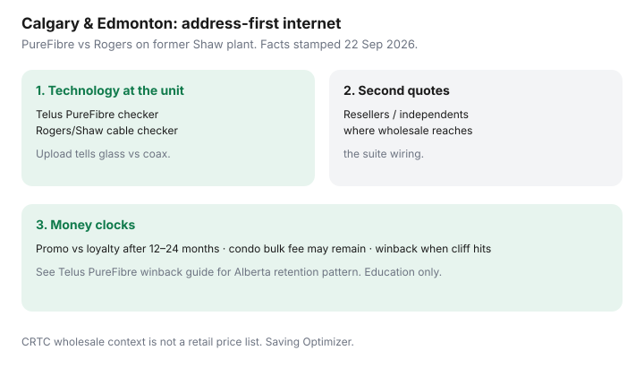

Internet · Canada
Home Internet in Calgary and Edmonton: Telus PureFibre, Rogers/Shaw, and Reseller Checks
Calgary and Edmonton shoppers lose money when they price a city flyer instead of a suite. Telus PureFibre, Rogers service on the former Shaw plant, and resellers do not share one checkout. This is an address-first checklist — education only, not a live Alberta rate card.
Disclosure: No Telus, Rogers, Shaw, or reseller partnership claimed. Affiliate opportunity types only (ISP plan categories). Confirm every number at the unit. Education only.
Key takeaways
- Run PureFibre and cable checkers on the same unit; upload usually reveals glass versus coax.
- Add at least one reseller/independent quote where wholesale reaches the suite.
- Score promo versus loyalty after 12–24 months — Alberta cliffs rhyme with the rest of Canada.
- Condo bulk fees can survive a switch; ask before you celebrate.
- Winback when the cliff is dated and you hold a real BATNA (PureFibre winback).
PureFibre footprint vs cable at Calgary/Edmonton addresses

- Telus PureFibre: glass to the home/suite where the checker says so — symmetrical or high uploads are the point for WFH.
- Rogers on former Shaw coax: strong download marketing, asymmetric uploads; evening node behaviour varies by building.
- Some addresses still see copper or incomplete fibre — believe the tool plus a written install type, not a lawn sign two blocks away.
- Facts stamped 22 Sep 2026: treat CRTC wholesale rate decisions as regulatory context, not your retail invoice.
Reseller and independent options worth quoting
Where resale or independent access exists, pull a third quote with modem approval lists and support hours. A $10 gap that costs three evening phone queues may not be cheaper. Use the same 24-month template as Toronto and Vancouver guides.
Promo vs loyalty pricing after 12–24 months
| Line | Promo year | Loyalty / post-credit |
|---|---|---|
| Monthly internet | ||
| Modem / Wi-Fi rental | ||
| Install / hook-up | n/a recurring | |
| TV/phone add-ons | ||
| 12- / 24-month total |
Condo bulk-deal caveats in Alberta cities
Ask the board or property manager: is internet embedded in condo fees? Is it optional? Can alternate providers access telecom rooms? A bulk discount can be real value — or a fee you keep paying after you bring your own ISP. Pair with apartment and condo rights for the CRTC multi-dwelling access framing (not Alberta legal advice).
Winback timing when a promo ends
Calendar the cliff. Gather PureFibre versus cable versus reseller quotes. Future-date a cancellation you are willing to keep, then ask retention to beat a number in one email: rate, upload, ETF, gateway. Do not bluff with a quote you would never install. Details: Telus PureFibre winback in Alberta and B.C.
Alberta city shopping checklist
- Unit-level PureFibre and Rogers/cable availability + upload numbers.
- One reseller/independent quote if the checker allows.
- Condo bulk fee status in writing.
- 24-month totals after promo.
- Winback packet ready 7–14 days before the cliff.
- First-bill audit for add-ons and wrong speed tier.
Sources & date stamps
- Telus and Rogers address checkers — live availability (facts stamped 22 Sep 2026; re-check at order).
- Saving Optimizer Alberta/B.C. PureFibre winback guide and fibre vs cable technology guide.
- CRTC wholesale and MDU access context — regulatory background, not a price list.
Frequently asked questions
Is Telus PureFibre available everywhere in Calgary and Edmonton?
No. Availability is address- and suite-specific. Run Telus’s fibre checker and a Rogers cable checker on the same unit number before you trust a neighbourhood rumour.
Is Rogers in Alberta still “Shaw”?
Consumer-facing service on much of the former Shaw plant is under Rogers branding and systems in many areas, but your jack and node history may still be Shaw-era coax. Quote the living unit, not the brand nostalgia.
Should I bother with resellers?
Yes when the address qualifies. Independents and resellers can undercut headline incumbents on the same last mile — confirm modem rules and support hours before you chase a $5 gap.
What about condo bulk internet in Alberta cities?
A bulk fee in condo fees can continue even if you bring your own ISP. Ask the board what is mandatory, what is optional, and whether alternate providers can access the building.
When do I run a winback?
When the promo cliff is dated and you hold a competing quote you would actually take. See the Telus PureFibre Alberta/B.C. winback playbook for the retention email pattern.